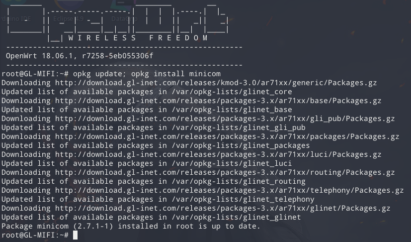

I’ve been using the Huawei E5885L for over a year. For me, it’s not only a near-perfect 4G portable router, but after some mods it also becomes a great tool for penetration testing. Even though it’s a very nice product, I still ran into quite a few pain points during security research. After switching to the GL.iNet MIFI, it fully met my testing needs. It solves the problems—but in some places it feels a bit rough around the edges.
Chassis

On the side there’s a very “special” air outlet that looks like eyes (o皿o). You can even see a fan shape inside—ugly and useless.

After taking it apart, you can see a bare-bones battery stuck to the shell, covered by a dark green sheet.

First, the E5885L uses a HiSilicon LTE Cat6 chipset, with the baseband model hi6932. This baseband is also used in the automotive-grade 919 series, so performance is at least respectable. However, when an automotive-grade chip is used as an NAD, network load is typically very low. In portable-router designs, RAM is also much smaller than in automotive systems. Once the load increases, network instability can show up—this scenario tends to happen during testing.
In some cases I need two RJ45 ports. The E5885L can’t satisfy that, but the GL-MIFI has two RJ45 ports, and the WAN port can be configured as a LAN port. It’s very flexible.
Sometimes I need to do ARP spoofing, and due to the E5885L’s configuration it can’t be implemented successfully.
On the E5885L, changing the IMEI requires rebooting the system to take effect. On the GL-MIFI, the application processor and the baseband are separated, so you only need to reset the 4G module for the change to take effect.
GL-MIFI supports using an external 3G/4G modem via USB. Often a PC can’t dial with a modem—maybe the driver isn’t supported, maybe pppd isn’t configured correctly. In that case, you can plug the target modem into the GL-MIFI to get it recognized, avoiding the hassle of doing E-SIM fly-wire work.
Usage
The internal antennas are also stuck to the shell. The GL-MIFI uses the Quectel EC20 4G module (Mini PCI-E). The domestic version uses the EC20-CEHCLG variant, which supports data only and cannot make phone calls.

Many AR9331 GPIO pins are broken out on the PCB, which is helpful for developing IoT applications.
/dev/ttyUSB0 DM
/dev/ttyUSB1 GPS NMEA message output
/dev/ttyUSB2 AT commands
/dev/ttyUSB3 PPP connection or AT commands
wwan0 (QMI mode)USB network adapter
The web UI provides a plugin for quickly sending AT commands.

It’s very convenient for basic operations.

Changing the IMEI is very easy.

APN configuration is supported, which is very handy.
SSH is enabled by default. It’s built on OpenWrt, and GL.iNet’s package feeds are fast.

Install opkg packages onto the SD card
https://forum.gl-inet.com/t/mifi-install-package-on-external-storage-usb-or-sd-card/4332
Other notes
You can refer to the official tutorial for using the MIFI communication module:
https://github.com/domino-team/docs/blob/master/docs/mini/mifi.md
Osmocom also has notes on hacking the Quectel EC20:
https://osmocom.org/projects/quectel-modems/wiki/EC20
In newer firmware, AT+QLINUXCMD has been disabled, so you can’t send commands directly.
 CC BY-NC-SA 4.0
CC BY-NC-SA 4.0